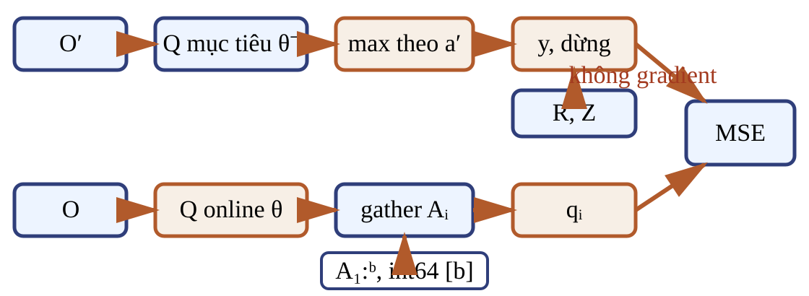
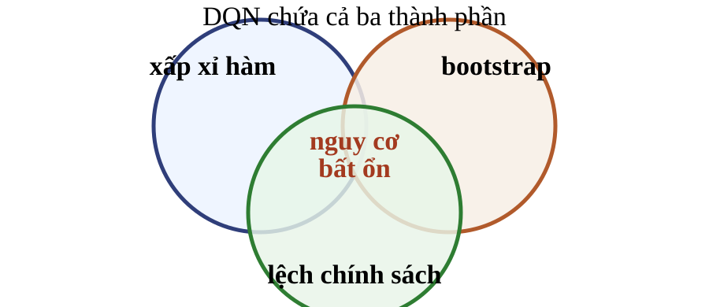
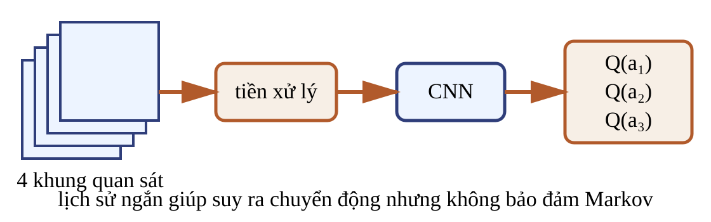

Với $\epsilon_{\mathrm{exp}}\in[0,1]$, quy tắc $\epsilon_{\mathrm{exp}}$-greedy tạo dữ liệu bằng khám phá và hành động tham lam.
Phép sao lưu đích
Phép cực đại theo $a'$ là phép sao lưu của toán tử tối ưu Bellman, không phải trung bình theo xác suất của chính sách đích.
Q-learning không cần trọng số lấy mẫu quan trọng cho phép cực đại này. Dữ liệu vẫn lệch hành vi vì khám phá và vì replay giữ chuyển tiếp từ các chính sách cũ.
Quy mô làm thay đổi bài toán
Bảng
Số ô tăng theo $|\mathcal S||\mathcal A|$ và không xử lý trực tiếp không gian trạng thái liên tục.
Xấp xỉ hàm
Chi phí gắn với số tham số và phép tính, nhưng cần giả thiết cấu trúc để có bảo đảm mẫu.
Không có một cận mẫu chung chỉ từ việc thay bảng bằng đặc trưng hay mạng sâu.
Một mạng tạo vòng phản hồi di động
Giao diện DQN cho hành động rời rạc là $\mathbf q_\theta(o)\in\mathbb R^{|\mathcal A|}$ và $Q_\theta(o,a)=[\mathbf q_\theta(o)]_a$.
Phản ví dụ một mạng
Nếu cùng $\theta$ tạo $q$ và đích bootstrap, một bước cập nhật có thể đổi cả dự đoán lẫn nhãn.
Tách hai bản sao
$Q_\theta$ nhận gradient; $Q_{\theta^-}$ tạo đích. Khởi tạo $\theta$, rồi đặt $\theta^-\leftarrow\theta$.
Bootstrap trở thành bài toán hồi quy
Sau khi khởi tạo hai mạng, giữ $Q_{\theta^-}$ cố định giữa các lần đồng bộ. Mạng online dự đoán $q_t=Q_\theta(O_t,A_t)$; nhãn hồi quy là
Cho $\gamma=0{,}9$, $R_{t+1}=-2$ và $\max_{a'}Q_{\theta^-}(O_{t+1},a')=100$.
Chưa kết thúc
$Z_{t+1}=0$
$y_t=-2+0{,}9(100)=88$
Đã kết thúc
$Z_{t+1}=1$
$y_t=-2$
Câu hỏi: giá trị 100 có ảnh hưởng đến đích ở chuyển tiếp kết thúc không?
Không; mặt nạ $(1-Z)$ triệt tiêu nhánh bootstrap.
Dừng gradient ở đích

Trong $\{(O_i,A_i,R_i,O'_i,Z_i,U_i)\}_{i=1}^b$, $Z_i$ là kết thúc MDP và $U_i$ là cắt ngắn ngoài mô hình. Gather lấy $q_i$; bài dùng sai số bình phương trung bình (MSE).
$Z_i$ biểu diễn kết thúc của MDP đang mô hình hóa. $U_i$ chỉ báo cắt ngắn ngoài mô hình và điều khiển reset.
Giả mã DQN: tương tác và lưu
Đầu vào: $\gamma,\epsilon_{\mathrm{exp}}\in[0,1]$; $b,N_{\mathrm{start}},N,F,C\in\mathbb N_+$ với $b\le N_{\mathrm{start}}\le N$; optimizer đã chọn với tốc độ học $\eta>0$. Đầu ra: tham số cuối $\theta$ và chính sách tham lam theo $Q_\theta$.
Khởi tạo $\mathcal D$, $\theta$; đặt $\theta^-\leftarrow\theta$, $O_0$ từ reset, $t\leftarrow0$, $k_{\mathrm{opt}}\leftarrow0$. 1. Chọn $A_t$ theo $\epsilon_{\mathrm{exp}}$-greedy từ $Q_\theta(O_t,\cdot)$. 2. Bước môi trường; nhận $R_{t+1}$, hai cờ, quan sát trả về và thông tin API. 3. Xác định quan sát của chuyển tiếp: dùng final_observation nếu có, nếu không dùng quan sát trả về; rồi lưu vào $\mathcal D$. 4. Nếu cần reset mà API chưa tự reset, gọi reset; gán quan sát bắt đầu vòng kế. Tăng $t\leftarrow t+1$.
Giả mã DQN: tối ưu và đồng bộ
Nếu $|\mathcal D|\ge N_{\mathrm{start}}$ và $t\bmod F=0$ (kiểm sau khi tăng $t$): 5. Lấy đều $\{(O_i,A_i,R_i,O'_i,Z_i,U_i)\}_{i=1}^b$ từ $\mathcal D$. 6. Gather một phần tử mỗi hàng: $q_i=Q_\theta(O_i,A_i)$. 7. Trong no-grad, tính $y_i=R_i+\gamma(1-Z_i)\max_{a'}Q_{\theta^-}(O'_i,a')$. 8. Tính MSE; cập nhật $\theta$; tăng $k_{\mathrm{opt}}\leftarrow k_{\mathrm{opt}}+1$. 9. Sau cập nhật, nếu $k_{\mathrm{opt}}\bmod C=0$ thì đặt $\theta^-\leftarrow\theta$.
10. Ngoài điều kiện tối ưu: dừng theo ngân sách hoặc tiêu chuẩn đánh giá định trước.
Hai mạng tạo $[b,|\mathcal A|]$; gather chọn một hành động mỗi hàng, còn max tạo một giá trị mỗi hàng.
Mọi tensor dùng trong loss phải ở cùng thiết bị; $q,y\in\mathbb R^b$ và loss là vô hướng.
Kiểm tra một mini-batch
bước
mẫu 1
mẫu 2
mặt nạ
$1-Z=1$
$1-Z=0$
đích $y$
$4{,}6$
$-2$
sai số $y-q$
$1{,}5$
$-0{,}5$
gradient theo $q$
$-1{,}5$
$0{,}5$
Câu hỏi: mẫu nào làm tăng $q$ dưới một bước gradient descent nhỏ?
Mẫu 1. Gradient theo $q_1$ âm nên phép trừ gradient làm $q_1$ tăng.
Bài tập: sửa bốn lỗi cài đặt
done = terminated or truncated
next_o = obs_after_step # API có thể đã tự reset
y = r + gamma * (1 - done) * q_target(next_o).max()
loss = ((y - q_online(o)[a]) ** 2).mean()
Câu hỏi: sửa quan sát kế tiếp, mặt nạ MDP, đường gradient và phép chọn hành động theo batch.
final_o = info.get("final_observation")
next_o = obs_after_step if final_o is None else final_o
z = terminated.float() # giả sử đây là kết thúc MDP mô hình hóa
with no_grad():
y = r + gamma * (1 - z) * q_target(next_o).max(1).values
q = q_online(o).gather(1, a[:, None]).squeeze(1)
loss = ((y - q) ** 2).mean()
Optimizer chỉ nhận gradient của loss
Với chỉ số cập nhật $j\in\mathbb N_+$ và tốc độ học $\eta>0$:
Mẫu cũ có thể nhận đích mới dù $(O_i,A_i,R_i,O'_i,Z_i,U_i)$ không đổi.
Bộ ba nguy hiểm vẫn còn trong DQN

Mạng sâu là xấp xỉ hàm; $y_i$ dùng bootstrap; $\epsilon$-greedy và replay tạo dữ liệu khác chính sách. Replay và mạng mục tiêu không cho bảo đảm hội tụ tổng quát.
Giao diện tối thiểu cho Atari

$O_t$: lịch sử bốn khung đã tiền xử lý; $A_t\in\mathcal A$ là lệnh điều khiển rời rạc.
Môi trường trả $R_{t+1}\in\mathbb R$ và quan sát kế tiếp; CNN tạo $|\mathcal A|$ giá trị Q.
Đây là hợp đồng tối thiểu để đọc tensor, không phải đặc tả tái lập kết quả Atari.
Bốn khung không bảo đảm tính Markov
Một khung
Không cho biết vật thể đang đi theo hướng nào nếu chỉ nhìn vị trí hiện tại.
Bốn khung
Bổ sung động học ngắn hạn, nhưng có thể vẫn thiếu biến ẩn hoặc lịch sử dài hơn.
Câu hỏi: chồng khung giải quyết hoàn toàn quan sát riêng phần không?
Không. Nó chỉ làm biểu diễn giàu thông tin hơn trong bài toán Atari cụ thể.
Kiểm tra tổng hợp
Câu hỏi: replay giảm cơ chế nào và để lại giới hạn nào?
Câu hỏi: mạng mục tiêu làm chậm đại lượng nào?
Câu hỏi: khi nào cắt ngắn vẫn cần bootstrap?
Câu hỏi: optimizer thích nghi có sửa bộ ba nguy hiểm không?
Bài tập kế là một ablation dùng lại hai cơ chế replay và mạng mục tiêu; sau đó trang kết thu hồi bốn kết quả học tập đầu bài.
Bài tập: thí nghiệm loại bỏ
Bỏ replay
Dự đoán tác động lên tự tương quan của batch, độ đa dạng mẫu và đường return.
Bỏ mạng mục tiêu
Dự đoán tác động lên tốc độ đổi của đích, TD error và dao động tham số.
Câu hỏi: thiết kế thí nghiệm loại bỏ (ablation) công bằng và cách tổng hợp nhiều lần chạy độc lập.
Định trước cùng số lần chạy cho mỗi nhánh; giữ kiến trúc, ngân sách, optimizer và lịch khám phá; báo return đánh giá, TD error, chuẩn gradient và độ phân tán.
Hợp đồng của một bản DQN đúng
Biểu diễn
Quan sát vào, vector Q cho tập hành động rời rạc ra.
Chuyển tiếp
Chỉ số nhất quán; phân biệt kết thúc với cắt ngắn.
Đích
Có mặt nạ, mạng mục tiêu và dừng gradient.
Dữ liệu
Replay giảm tương quan nhưng không tạo i.i.d.
Đồng bộ
Giữ $\theta^-$ cố định rồi sao chép theo chu kỳ.
Kết luận
Đánh giá thực nghiệm; không suy ra hội tụ tổng quát.